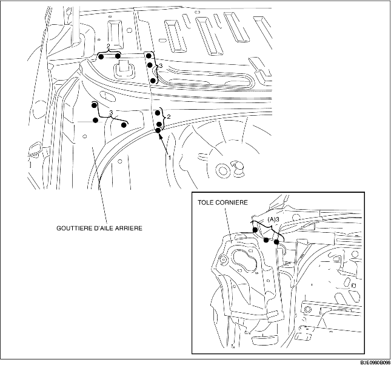
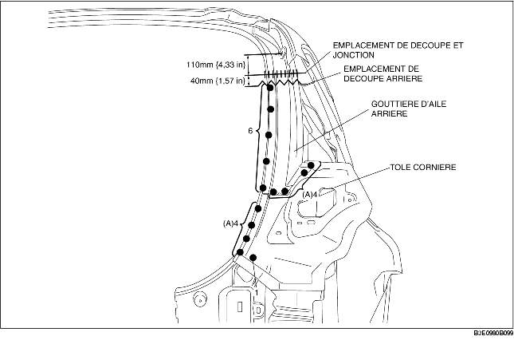

DEPOSE DE LA GOUTTIERE D'AILE ARRIERE ET DE LA TOLE CORNIERE
B3E098070440B01
4SD
1. Déposer la gouttière d'aile arrière et la tôle cornière.
-
Remarque
-
• Lors de la dépose séparée de la gouttière d'aile arrière et de la tôle cornière, percer aux 3 emplacements indiqués par (A).

5HB
1. Déposer la gouttière d'aile arrière et la tôle cornière.
-
Remarque
-
• Lors de la dépose séparée de la gouttière d'aile arrière et de la tôle cornière, percer aux 8 emplacements indiqués par (A).
